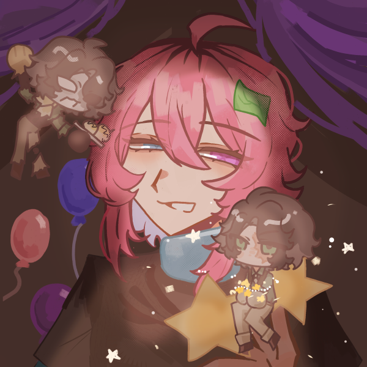

陳 亦涵
台北市信義區西村里市府路1號 · 02-2720-8889 ·
a115040029@mail.shu.edu.tw
您好！我是陳亦涵，⽬前就讀於世新⼤學圖文傳播學系。熱 愛網⾴前端開發、視覺設計與數位內容創作。具備 HTML/CSS/JavaScrip t 基礎，並具備良好的團隊溝通與問題解決能⼒，aptapt.
您好！我是陳亦涵，⽬前就讀於世新⼤學圖文傳播學系。熱 愛網⾴前端開發、視覺設計與數位內容創作。具備 HTML/CSS/JavaScrip t 基礎，並具備良好的團隊溝通與問題解決能⼒，aptapt.
負責於該場所進行長達四年的學習與實踐經歷，並製造成品供單位使用。
於7-11網路商城進行操盤商品與金錢的流動。
GPA: 3.85 / 4.0
於課餘時間我喜歡繪製自己感興趣的插畫，並將圖片放置於自己的專頁，也喜歡多觀摩他人的作品。
我也喜歡閱讀外國的讀物，於空閒了解不同作品的文筆與故事世界觀。
繪製limbus company同人。

送朋友的生日賀圖。

可互動之桌面寵物。